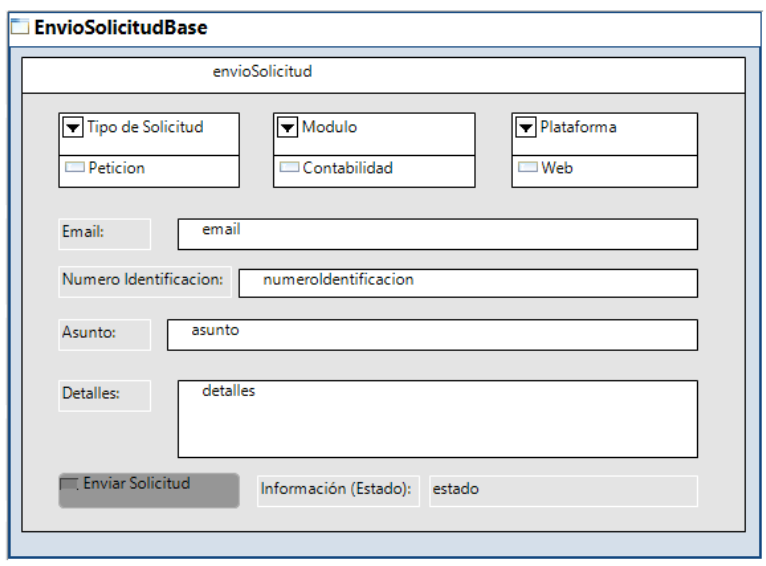

| Task: Construir el diseno visual |
 |
|
Purpose
| El proposito de la creacion de esta parte visual es poder crear la parte atractiva del proyecto, en donde se va a ingresar los datos de los usuarios. |
Relationships
| Roles | Primary Performer: | Additional Performers: |
|---|---|---|
| Inputs | Mandatory:
| Optional:
|
| Outputs |
|
|
Main Description
 En la anterior imagen podemos ver el diseño visual de la parte de envio de solicitud del proyecto de soporte y mantenimiento. |